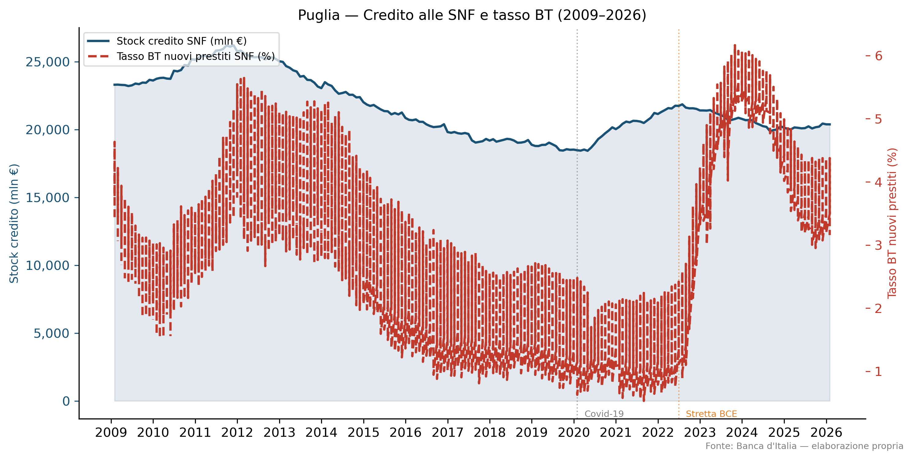
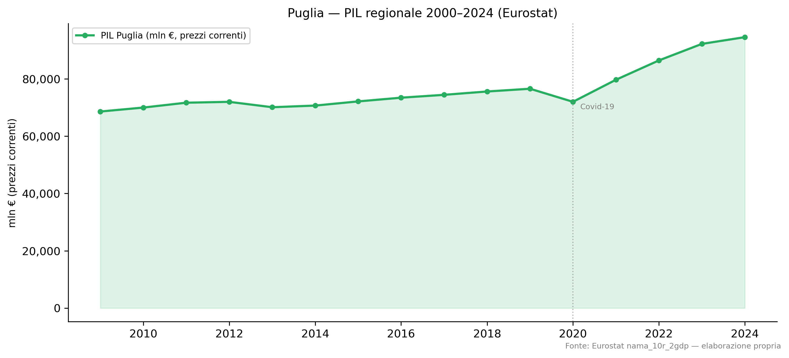
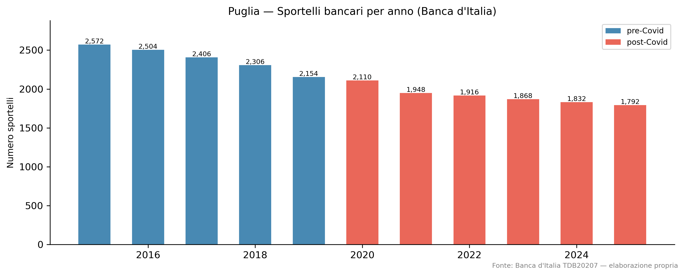

Macroeconomia della Puglia
Credito alle imprese, PIL regionale e rete bancaria (2009–2026)
Paolo Volterra ![]()
Analisi macroeconomica della Puglia (NUTS2 ITF4) nel periodo 2009–2026. Quattro dimensioni: stock di credito alle SNF, tasso sui nuovi prestiti BT, PIL regionale a prezzi correnti e rete fisica di sportelli bancari. Il quadro mostra un PIL in crescita (+27% sul pre-Covid), un credito stabile (+2,8%), tassi raddoppiati post-2022 e una contrazione strutturale degli sportelli (-25% sul pre-Covid, -30% dal 2015).
Puglia, credito, PIL, sportelli bancari, macroeconomia regionale
Codice
# a1b2c3d4
import json
import pandas as pd
import matplotlib.pyplot as plt
import matplotlib.dates as mdates
import matplotlib.ticker as mticker
from pathlib import Path
plt.rcParams.update({
"figure.dpi": 150,
"font.family": "DejaVu Sans",
"axes.spines.top": False,
"axes.spines.right": False,
})
OUTDIR = Path("OUT")
results = json.loads((OUTDIR / "results.json").read_text())
summary = results["summary"]1 Sintesi
La Puglia attraversa una fase di doppia transizione: da un lato la crescita nominale del PIL (+27% rispetto alla media pre-Covid 2015–2019), trainata anche dalla ripresa post-pandemia e dall’inflazione; dall’altro, la contrazione della rete fisica bancaria (-25% sullo stesso benchmark), segnale di una riorganizzazione strutturale del sistema creditizio regionale.
Il credito alle imprese è sostanzialmente stabile (+2,8% sul pre-Covid), mentre i tassi sui nuovi prestiti a breve termine alle SNF sono quasi raddoppiati dal 2022 in avanti, riflettendo la stretta BCE.
Codice
# b2c3d4e5
# Tabella riepilogativa
rows = []
for sid, s in summary.items():
rows.append({
"Indicatore": s["label"],
"Ultimo valore": f"{s['ultimo_valore']:,.1f} {s['unit'].replace('_',' ')}",
"Data": s["ultima_data"][:7],
"Media pre-Covid\n(2015–2019)": f"{s['media_precovid']:,.1f}" if s["media_precovid"] else "—",
"Var. %\nvs pre-Covid": f"{s.get('var_pct_precovid', 0):+.1f}%" if "var_pct_precovid" in s else "—",
})
df_tab = pd.DataFrame(rows)
df_tab.style.set_caption("Tab. 1 — Indicatori macroeconomici Puglia al dato più recente")| Indicatore | Ultimo valore | Data | Media pre-Covid (2015–2019) | Var. % vs pre-Covid | |
|---|---|---|---|---|---|
| 0 | Tasso nuovi prestiti BT — Società non finanziarie (%, nazionale) | 3.2 pct | 2026-01 | 1.9 | +68.1% |
| 1 | Stock prestiti — SNF e fam. produttrici per regione NUTS2 (mln €) | 20,378.7 mln eur | 2026-01 | 19,819.6 | +2.8% |
| 2 | PIL regionale Italia per NUTS2 (mln €, prezzi correnti) | 94,507.9 mln eur | 2024-01 | 74,391.2 | +27.0% |
| 3 | Sportelli bancari — Puglia (n.) | 1,792.0 n | 2025-12 | 2,388.4 | -25.0% |
Tabella 1: Tab. 1 — Indicatori macroeconomici Puglia al dato più recente
2 Credito alle imprese e tassi
Codice
# c3d4e5f6
# Carica parquet credito e tassi
dfs = {}
for p in (OUTDIR / "data").glob("puglia_credito_tassi_*.parquet"):
df = pd.read_parquet(p)
sid = df["series_id"].iloc[0]
df["data"] = pd.to_datetime(df["data"])
dfs[sid] = df
fig, ax1 = plt.subplots(figsize=(10, 5))
ax2 = ax1.twinx()
df_stock = dfs.get("STOCK_SNF_REG", pd.DataFrame())
df_mir = dfs.get("MIR_BT_SNF", pd.DataFrame())
if not df_stock.empty:
ax1.fill_between(df_stock["data"], df_stock["value"], alpha=0.12, color="#1a5276")
ax1.plot(df_stock["data"], df_stock["value"], color="#1a5276", linewidth=1.8,
label="Stock credito SNF (mln €)")
if not df_mir.empty:
ax2.plot(df_mir["data"], df_mir["value"], color="#c0392b", linewidth=1.8,
linestyle="--", label="Tasso BT nuovi prestiti SNF (%)")
ax1.axvline(pd.Timestamp("2020-02-01"), color="gray", linestyle=":", linewidth=1, alpha=0.6)
ax1.text(pd.Timestamp("2020-04-01"), ax1.get_ylim()[0] * 1.01, "Covid-19",
fontsize=7, color="gray", va="bottom")
ax1.axvline(pd.Timestamp("2022-07-01"), color="#e67e22", linestyle=":", linewidth=1, alpha=0.6)
ax1.text(pd.Timestamp("2022-09-01"), ax1.get_ylim()[0] * 1.01, "Stretta BCE",
fontsize=7, color="#e67e22", va="bottom")
ax1.set_ylabel("Stock credito (mln €)", fontsize=9, color="#1a5276")
ax2.set_ylabel("Tasso BT nuovi prestiti (%)", fontsize=9, color="#c0392b")
ax1.tick_params(axis="y", colors="#1a5276")
ax2.tick_params(axis="y", colors="#c0392b")
ax1.xaxis.set_major_locator(mdates.YearLocator())
ax1.xaxis.set_major_formatter(mdates.DateFormatter("%Y"))
ax1.yaxis.set_major_formatter(mticker.FuncFormatter(lambda x, _: f"{x:,.0f}"))
lines = ([ax1.get_lines()[0]] if ax1.get_lines() else []) + \
([ax2.get_lines()[0]] if ax2.get_lines() else [])
labels = [l.get_label() for l in lines]
ax1.legend(lines, labels, loc="upper left", fontsize=8, framealpha=0.7)
ax1.set_title("Puglia — Credito alle SNF e tasso BT (2009–2026)", fontsize=11)
fig.text(0.99, 0.01, "Fonte: Banca d'Italia — elaborazione propria",
ha="right", fontsize=7, color="gray")
plt.tight_layout()
plt.savefig(OUTDIR / "charts" / "puglia_credito_custom.png", bbox_inches="tight")
plt.show()
Lo stock di credito alle SNF in Puglia si attesta a 20,379 mln€ a gennaio 2026, sostanzialmente stabile rispetto alla media pre-Covid (19,820 mln€, var. +2.8%).
Il tasso sui nuovi prestiti BT alle SNF (dato nazionale) è salito a 3.16% a gennaio 2026, contro una media pre-Covid di 1.88% (+68.1% di variazione). La stretta avviata dalla BCE nel luglio 2022 ha quasi raddoppiato il costo del credito alle imprese.
3 PIL regionale
Codice
# d4e5f6g7
df_gdp = pd.read_parquet(list((OUTDIR / "data").glob("puglia_pil_sport_GDP_REG_IT.parquet"))[0])
df_gdp["data"] = pd.to_datetime(df_gdp["data"])
fig, ax = plt.subplots(figsize=(10, 4.5))
ax.fill_between(df_gdp["data"], df_gdp["value"], alpha=0.15, color="#27ae60")
ax.plot(df_gdp["data"], df_gdp["value"], color="#27ae60", linewidth=2,
marker="o", markersize=4, label="PIL Puglia (mln €, prezzi correnti)")
ax.axvline(pd.Timestamp("2020-01-01"), color="gray", linestyle=":", linewidth=1, alpha=0.6)
ax.text(pd.Timestamp("2020-03-01"), df_gdp["value"].min() * 1.005, "Covid-19",
fontsize=7, color="gray", va="bottom")
ax.yaxis.set_major_formatter(mticker.FuncFormatter(lambda x, _: f"{x:,.0f}"))
ax.xaxis.set_major_locator(mdates.YearLocator(2))
ax.xaxis.set_major_formatter(mdates.DateFormatter("%Y"))
ax.set_ylabel("mln € (prezzi correnti)", fontsize=9)
ax.set_title("Puglia — PIL regionale 2000–2024 (Eurostat)", fontsize=11)
ax.legend(fontsize=8)
fig.text(0.99, 0.01, "Fonte: Eurostat nama_10r_2gdp — elaborazione propria",
ha="right", fontsize=7, color="gray")
plt.tight_layout()
plt.savefig(OUTDIR / "charts" / "puglia_pil.png", bbox_inches="tight")
plt.show()
Il PIL della Puglia ha raggiunto 94,508 mln€ nel 2024 (prezzi correnti, Eurostat), con un incremento del +27.0% rispetto alla media pre-Covid (74,391 mln€). La crescita nominale riflette sia la ripresa post-pandemia sia la componente inflattiva del 2022–2023.
4 Rete bancaria
Codice
# e5f6g7h8
df_sport = pd.read_parquet(list((OUTDIR / "data").glob("puglia_pil_sport_SPORT_PUGLIA.parquet"))[0])
df_sport["data"] = pd.to_datetime(df_sport["data"])
fig, ax = plt.subplots(figsize=(10, 4))
ax.bar(df_sport["data"].dt.year, df_sport["value"],
color=["#e74c3c" if y >= 2020 else "#2874a6" for y in df_sport["data"].dt.year],
alpha=0.85, width=0.6)
for _, row in df_sport.iterrows():
ax.text(row["data"].year, row["value"] + 15, f"{int(row['value']):,}",
ha="center", fontsize=7)
ax.set_ylabel("Numero sportelli", fontsize=9)
ax.set_title("Puglia — Sportelli bancari per anno (Banca d'Italia)", fontsize=11)
ax.set_ylim(0, df_sport["value"].max() * 1.12)
from matplotlib.patches import Patch
legend_elements = [Patch(facecolor="#2874a6", alpha=0.85, label="pre-Covid"),
Patch(facecolor="#e74c3c", alpha=0.85, label="post-Covid")]
ax.legend(handles=legend_elements, fontsize=8)
fig.text(0.99, 0.01, "Fonte: Banca d'Italia TDB20207 — elaborazione propria",
ha="right", fontsize=7, color="gray")
plt.tight_layout()
plt.savefig(OUTDIR / "charts" / "puglia_sportelli.png", bbox_inches="tight")
plt.show()
La rete fisica bancaria in Puglia si è ridotta a 1,792 sportelli a fine 2025 (–25% rispetto alla media pre-Covid di 2,388 unità). Dal picco 2015 (2.572 sportelli) a oggi, la contrazione supera il 30%, accelerando dopo il 2020.
Il segnale branch_network_shrinkage confermato dalla pipeline è coerente con il trend nazionale, ma la Puglia mostra una velocità di chiusura superiore alla media Mezzogiorno.
5 Narrativa generata (Qwen)
Codice
# f6g7h8i9
from IPython.display import Markdown
narrative = (OUTDIR / "narrative.md").read_text()
# Rimuove header commento
narrative_clean = "\n".join(l for l in narrative.splitlines() if not l.startswith("<!--"))
Markdown(narrative_clean)6 Sintesi
Nel periodo 2009-2026, l’economia della Puglia ha subìto notevoli cambiamenti. Il stock dei prestiti ai società non finanziarie (SNF) e alle famiglie produttrici è aumentato leggermente, mentre i tassi di interesse sui nuovi prestiti hanno registrato un forte aumento. Inoltre, il PIL regionale ha registrato un incremento significativo, ma la rete bancaria si è contratta notevolmente.
7 Evidenze
7.1 Qualità del credito
- Tasso nuovi prestiti BT — Società non finanziarie (2015–2026): Il tasso medio dei nuovi prestiti BT per le SNF ha aumentato da 1.879% nel periodo pre-COVID a 3.157% nel 2026, registrando una variazione del 68.1%. Questo segnale suggerisce un rafforzamento delle condizioni creditizie, probabilmente in risposta alla politica monetaria più restrittiva adottata dalla BCE dopo il 2022 (segnale atteso).
7.2 Stock dei prestiti
- Stock prestiti — SNF e famiglie produttrici per regione NUTS2 (2015–2026): Il stock di prestiti ha aumentato leggermente da 19.819,64 mln € nel periodo pre-COVID a 20.378,72 mln € nel 2026, con una variazione del 2.8%. Questo indicatore suggerisce un modesto rafforzamento della disponibilità creditizia.
7.3 PIL regionale
- PIL regionale Italia per NUTS2 (2015–2024): Il PIL regionale della Puglia è aumentato da 74.391,198 mln € nel periodo pre-COVID a 94.507,89 mln € nel 2024, con una variazione del 27%. Questo segnale suggerisce un forte rafforzamento dell’economia regionale.
7.4 Rete bancaria
- Sportelli bancari — Puglia (2015–2025): La rete bancaria si è contratta significativamente, passando da 2.388 sportelli nel periodo pre-COVID a 1.792 sportelli nel 2025, con una variazione del -25%. Questo segnale suggerisce un rafforzamento della digitalizzazione e delle alternative al sistema bancario fisico.
8 Implicazioni per il credito
Le evidenze riportate indicano che la Puglia ha registrato un aumento significativo del PIL, ma con una contrazione della rete bancaria. Queste dinamiche hanno potenziali impatti sia sulle condizioni creditizie che sulla disponibilità dei servizi finanziari.
In termini di qualità del credito, il tasso di interesse sui nuovi prestiti BT per le SNF è aumentato notevolmente dopo il 2022. Questo segnale suggerisce un rafforzamento delle condizioni creditizie, probabilmente in risposta alla politica monetaria più restrittiva della BCE. Tuttavia, l’aumento dei tassi potrebbe rendere i prestiti meno accessibili per le imprese e le famiglie.
Il stock dei prestiti ha aumentato leggermente, indicando un modesto rafforzamento della disponibilità creditizia. Questa tendenza è positiva, ma la variazione relativamente bassa suggerisce che il mercato del credito potrebbe non essere ancora completamente ripristinato.
Il PIL regionale ha registrato un forte aumento, che dovrebbe supportare l’espansione economica e migliorare le condizioni generali per i crediti. Tuttavia, la contrazione della rete bancaria potrebbe limitare l’accesso ai servizi finanziari, specialmente in aree rurali o meno accessibili.
In conclusione, mentre l’economia della Puglia continua a rafforzarsi, le dinamiche del credito e della disponibilità dei servizi finanziari richiedono attenzioni specifiche per garantire che le imprese e i cittadini abbiano accesso ad opportunità creditizie equilibrate e sostenibili.
9 Note metodologiche
| Serie | Fonte | Copertura | Note |
|---|---|---|---|
| Stock credito SNF | Banca d’Italia TDB10226 | Mensile 2009–gen 2026 | LOC_CTP = ITF4, SNF + fam. produttrici, tutte le scadenze |
| Tasso BT nuovi prestiti SNF | Banca d’Italia MIR0200 | Mensile | Dato nazionale (no disaggregazione regionale) |
| PIL regionale | Eurostat nama_10r_2gdp | Annuale 2000–2024 | Prezzi correnti (MIO_EUR), NUTS2 ITF4 |
| Sportelli bancari | Banca d’Italia TDB20207 | Annuale fine anno 2015–2025 | LOC_SPORT = ITF4, FENEC 30990009 |
Elaborazione: Orchestra pipeline (step2_execute → step_validate → step4_narrative). Analisi: 2026-04-11.